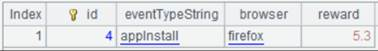

Description:
Write a sequence into an Excel file object.
Syntax:
xo.xlsexport(A, x:Fi,..;s)
Note:
The function writes a sequence to sheet s or the sth sheet in an Excel file. Create sheet s if it doesn’t exist. Parameter xo is an Excel file object. Parameter A can be a cursor or a table sequence when xo is retrieved using @w option; A can only be a cursor when xo is retrieved using a non-@w way.
After the write action is finished, use xo.xlswrite() function to save the content written to the Excel sheet before you can view it.
Parameters:
|
xo |
An Excel file object read in the non-@r way |
|
A |
A cursor/a table sequence |
|
x |
To-be-entered field names; all fields will be populated when omitted |
|
Fi |
The column alias; use the original name when omitted |
|
s |
Sheet name, which should not exceed 31 characters and contain special characters []:/\?*, or sheet number |
Options:
|
@t |
Export headers; headers will overwrite the last row if there is data already |
|
@a |
Append data according to the current format if the page exists; overwrite the existing data by default |
Example:
|
|
A |
|
|
1 |
=demo.query("select * from scores") |
 Return a table sequence |
|
2 |
=file("E11.xlsx") |
|
|
3 |
=A2.xlsopen() |
Read E11.xlsx |
|
4 |
=A3.xlsexport@t(A1) |
Write A1’s table sequence into E11.xlsx |
|
5 |
=A3.xlsexport@t(A1,CLASS:class,STUDENTID:sid;"Class") |
Create a sheet named Class in E11.xlsx, rename CLASS field and STUDENTID field in A1’s table sequence and write them into sheet Class |
|
6 |
=A3. xlsexport@a(A1,STUDENTID,SUBJECT,SCORE; "STUSCORE") |
There is a sheet named STUSCORE in E11.xlsx that has data in it, so append STUDENTID, SUBJECT, SCORE columns in A1’s table sequence to this page |
|
7 |
=A2.xlswrite(A3) |
Save the pupulated data in E11.xlsx using the xlswrite() function |